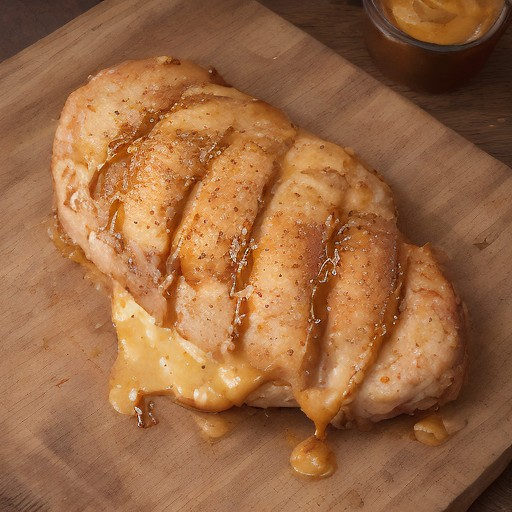

メインディッシュ
極厚カツ × ハニーマスタード：悪魔の甘酸っぱさ炸裂！

極厚カツの美味しさを一層引き立てる、意外な甘酸っぱさに満ちたハニーマスタードソースが、悪魔的な食欲を刺激する！
💡 こんな時・こんな人におすすめ！
パーティー、BBQ、特別な日にぴったり
📋 必要な材料（ポストイット風）
材料リスト 1
- 極厚カツ1個
- ハニーマスタード大さじ2
- レモン汁大さじ1
材料リスト 2
- 塩少々
- 黒胡椒少々
🍳 作り方ステップ
1
極厚カツにハニーマスタード、レモン汁、塩、黒胡椒を混ぜ合わせたソースを塗ります。
2
フライパンで熱し、両面を焼き色がつくまで炒め、お好みでソースを足してさらに焼き上げます。
3
焼き上げた極厚カツに、ハニーマスタードソースをかけて、そのまま食べ進みます。
4
極厚カツの肉汁とハニーマスタードの甘酸っぱさが、口の中を駆け巡ります。